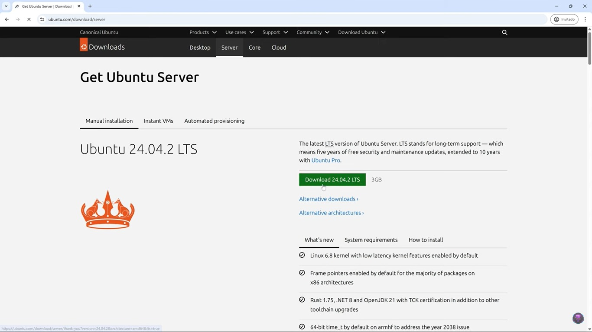
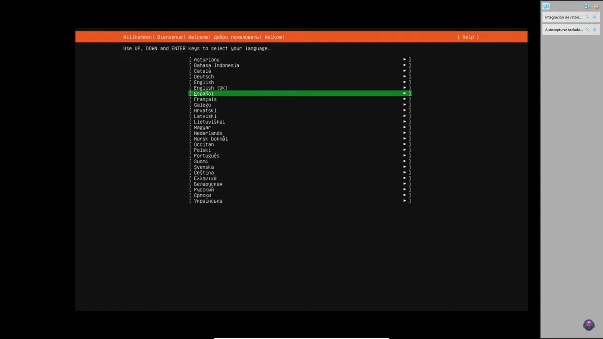
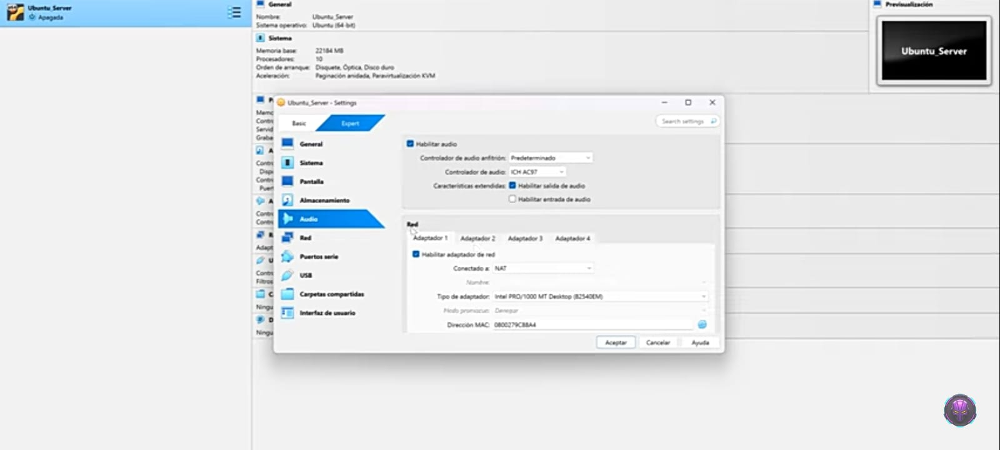
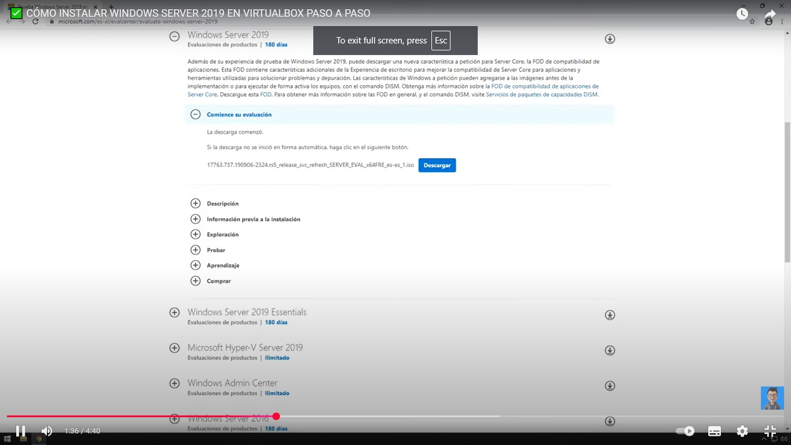
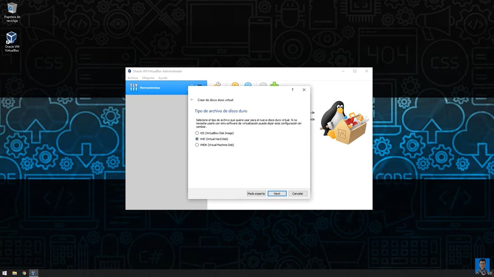

Instalación de Ubuntu Server
-
Paso 1: Inicio del instalador
Arranca desde el medio de instalación y selecciona "Install Ubuntu Server".

-
Paso 2: Selección de idioma
Elige el idioma preferido para la instalación.

-
Paso 3: Configuración de red
Configura la red según tus necesidades.

Instalación de Windows Server
-
Paso 1: Inicio del instalador
Arranca desde el medio de instalación y selecciona "Instalar ahora".

-
Paso 2: Configuración de disco
Selecciona el disco donde instalar el sistema operativo.
